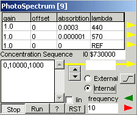
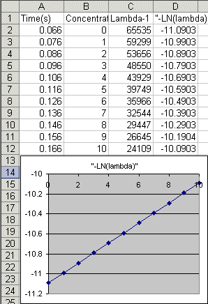
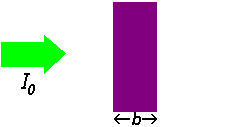

November 2002
JALss, PhotoSpectroMetry
|
PhotoSpectroMeter This device is used to simulate the amplitude behaviour of 3 channels of a photospectrometer. It does not implement the separation of chemicals and accompagning time-spread function. For each channel, the intensity of the outcoming ligth beam is calculated by the following formula I = offset + ( gain * I0 * exp ( - concentration * absorbtion )) The intensity of the incoming light beam is represented by I0 (note that the value may be given as a hexadecimal number by preceding the number by a dollar sign, so it's easy to mimic a certain number of bits). By checking "LIN" a normal linear step is generated I = offset + gain * I0 * concentration / max_absorbtion |
 |
|
The absorbtion is taken from the table and the concentration is dynamically generated form the list "Concentration Sequence", so it's equal for all channels. The Concentration Sequence consists of a number of lines, where each line must have 3 integer numbers. With each line a "for loop" is created, which steps through a number of concentrations. first number = the start concentration second number = the end concentration third number = stepsize So "0,10,1" means "for concentration=0 step 1 until 10 do ..." Table values are activated, when the ENTER key is pressed while the value grid has focus. Stepping through the concentrations is done with an internal or external clock. The stepping clock is available on an output pin (just 1 cycle high), so it can be used for example to trigger a file storage. When all lines are processed, the sequence start again with the first line. There is an edit box where the actual concentration is displayed. Stepping can also be done manually by the up/down button. Gain and offset are used to introduce imperfections in the amplifiers (or other parts of the light-system). The column lambda (symbolizing the wavelength) is just for user readability. By taking the negative logaritme of an output, a perfect linear dependancy (if offset=0) of the concentration is achieved (as shown on the right). |
 |
|
Some background Absorbtion of light by molucules in a solution, is described by the Lambert-Beer law. I = I0 * 10 ^ ( a * b * C ) where I = intensity of the outgoing (measured) light I0 = intensity of the incoming light (measured through a reference channel) a = molecular absorbtion (extinction coëfficiënt) b = path length C = concentration |
 Some links: |